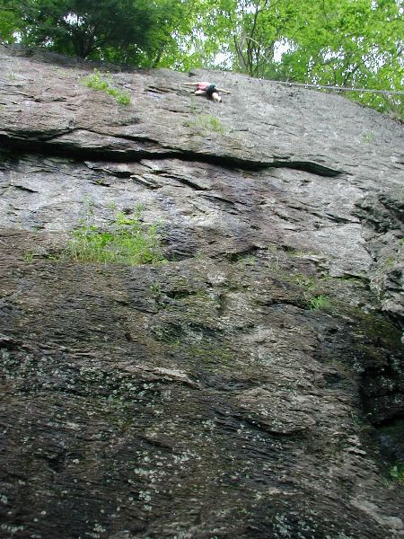
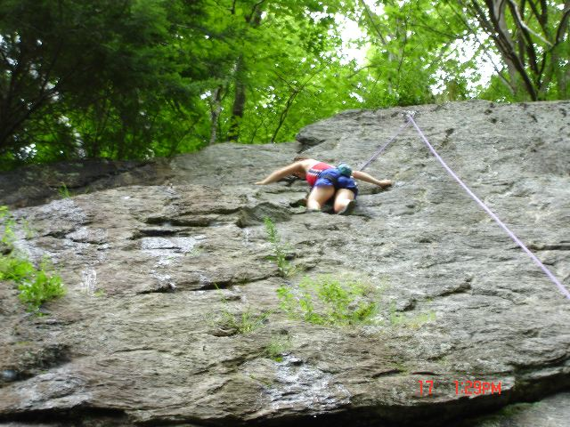

Rumney Assault #2
Location: Rumney, NH
Date: July 17, 2005
The Assult:
After the first successful summit at Rumney, the expedition team decided to make another attempt. But this time on a
more difficult route. Unfortunately, the team’s sherpa Oozing could not join the strong
team anchored by Basket, Trail Hoover, and Dry Foot. And Fuwangi’s absence was a notable loss as well, as he
was grounded by some intestinal ailment thought to be caused by someone’s IPA. However, joining the team as expedition
photographer was Tinker, and Short-Shorts provided much needed
moral support and served as base camp manager, a thankless and demanding job. As seen through the camera’s eye, here is
the account of the Second Assault on the infamous Rumney!
Carefully, Dry Foot launches into the lead
on an auspicious route known as "Glory Jean's".
Taking his time, not wanting to make a
fatal mistake,
Dry Foot makes slow but positive progress.
Dry Foot: "Basket, you got me?"
Basket: "Huh? What?"
Most climbing fatalities are the result of human error.

Dry Foot approaches the daunting
Hinterstoisser Traverse* with much anxiety and fear.
*Note: The Hinterstoisser Traverse is a section of the Eiger named when an Astro-German group perished on the
face of the Eiger. Hinterstoisser, Kurz, Angerer, and Rainer all perished on the face in adverse conditions.
The similar traverse on Rumney is no less treacherous!
Trail Hoover watches the tricky
traverse with cautious optimism.
She secretly wonders if she could keep Dry Foot's climbing shoes and harness should he perish.
Dry Foot appears to be stuck nearing
the traverse.
Slowly, he begins the crux move.
The team at the bottom grow weary and
bored.
Finally, Dry Foot makes the traverse and
begins setting the rope.
With a storm approaching, Dry Foot rushes
to establish the route
and avoid the fatal errors of so many previous climbers.
The team below rejoices with relief as
Dry Foot finally summits the route!
Basket launches enthusiastically on the
route.
Perhaps rushing too much, Basket
finds himself in a crux.
He reaches in a leap of faith...

...and teeters on the brink of disaster!

With adrenaline and sheer grit, Basket
prevails and reaches the Tinker Flake,
the first rest stop and bivouac.
Basket now reaches the treacherous
traverse.

Holding on for dear life, he completes
the traverse.
Exhausted, Basket descends to solid ground.
After losing pounds of body weight, Basket
begins his recovery with some Gatorade.
Trail Hoover readys herself for the next
assult.
Roping up, the team prepares.
Trail Hoover checks the time.
An ominous sign, as it could be her time of demise.
Or she has an appointment later on.

She cautiously ascends.
The mountain soon becomes both her best
friend and worst enemy.
Hoping to bring good luck, she caresses it with affection.
Short-shorts: "You go girlfriend!"

Reaching high with might and faith.
Demonstrating superior foot-work,
Trail Hoover makes short work on the first section of the climb.
Focused, she places solid foot placements.
Basket tries to snap a cheap one.
Who would have guessed?
Un-phased, she makes good progress.
And makes the final move onto Tinker Flake
for a much-deserved break.

High on Tinker Flake, she commits herself
to the next challenge - the Hinterstoisser Traverse.
She approaches the crux move to mantle
the traverse.
Dry Foot focuses on Trail Hoover's progress
and safety.
Basket seems to be distracted by something else.
Basket's distraction, working another
route. Who wouldn't be distracted?
Trail Hoover making the final move
to the traverse.
She cautiously makes her way across the
terror of the traverse.
Safely, she makes it across.

Fatigued, she prepares for the final
summit push.
Successful in her summit, she descends.
All are safe and well at base camp.
3 for
3, the team demonstrates their strength and success.
However, you never conquer a mountain, you only survive it.
Other teams making their way up the crags
at Rumney.
A video clip of Trail Hoover's final descent
BEWARE: It's a 26 Mb MPG file!
Right click, and "Save As"
On on

Photos by Tinker
And

Basket Boom Boom